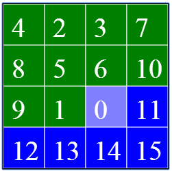
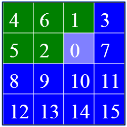

The Fifteen Puzzle Help Center
Overview
This week's homework introduced you to the Fifteen puzzle and outlined the highlights of building a solver for the puzzle. As described in the homework, the solution process for a puzzle of size- Solve the bottom
m−2 rows of the puzzle in a row by row manner from bottom to top. Each individual row will be solved in a right to left order. - Solve the rightmost
n−2 columns of the top two rows of the puzzle (in a right to left order). Each column consists of two unsolved positions and will be solved in a bottom to top order. - Solve the upper left
2×2 portion of the puzzle directly.
Puzzle class that allows you to interact with a GUI designed to simulate the Fifteen puzzle. Your task for this mini-project is to write a collection of Puzzle methods that implement each phase of the solution process. Several of these methods will correspond to invariants designed to help guide you towards a correct implementation of the solver. The remaining methods are solution methods for portions of the puzzle. Note that each of these solution methods updates the puzzle and returns the move string associated with this update.
Testing your mini-project
The provided template includes stubs for the methods that you will need to implement for this mini-project. You should write tests for thePuzzle methods as you implement them. (Note that the initializer for a Puzzle object accepts an optional initial configuration for the puzzle that is specified as a 2D list of integers.) This mini-project is difficult. If you attempt to implement all of the methods before doing any testing, the mini-project will be impossible. Please take our advice and test as you go.
After you complete each Puzzle method, submit your code to this Owltest page to confirm that your implementation of the method is correct.
Remember that OwlTest uses Pylint to check that you have followed the coding style guidelines for this class. Deviations from these style guidelines will result in deductions from your final score. Please read the feedback from Pylint closely. If you have questions, feel free to consult this page and the class forums.
When you are ready to submit your code to be graded formally, submit your code to the CourseraTest page for this mini-project that is linked on the main assignment page.
Important Note: The tests in OwlTest are a different for this project in two ways. First, if you fail a test, you will not be given the correct answer. Instead, you will be given an input for which your answer was incorrect, and you will need to determine what is wrong. Second, the tests for the first two phases are not as comprehensive as normal. This is intentional. You need to run some of your own tests to convince yourself that you have things working correctly. If you do not, you will fail some of the phase three tests because of broken functions from the previous phases. These modifications are meant to get you thinking more about testing and correctness.
Phase one
In this phase, your task is to implement three methods: one invariant method and two solution methods. The invariant method for this phase (as described in the problem #6 of the homework) islower_row_invariant(i, j). This method should return True if the following three conditions are all true:
- Tile zero is positioned at
(i,j) . - All tiles in rows
i+1 or below are positioned at their solved location. - All tiles in row
i to the right of position(i,j) are positioned at their solved location.
lower_row_invariant(2, 2) is true with tile zero in position 
We again remind you that you should implement and fully test lower_row_invariant before proceeding. In particular, we suggest that you test this method using OwlTest to confirm that your implementation of this method is correct before proceeding. Next, you will implement the two solution methods for this phase: solve_interior_tile and solve_col0_tile.
The method solve_interior_tile(i, j) is designed to solve the puzzle at position lower_row_invariant(i, j) is true and repositions the tiles in the puzzle such that lower_row_invariant(i, j - 1) is true. To implement solve_interior_tile, we suggest that you review problem #8 on the homework.
The second solution method solve_col0_tile(i) is designed to solve the puzzle at position lower_row_invariant(i, 0) and repositions the tiles in the puzzle such that lower_row_invariant(i - 1, n - 1) is true where solve_col0_tile is trickier than solve_interior_tile since the solution strategy for solve_interior_tile(i, j) involved moving tile zero through column
Our recommended strategy for solve_col0_tile is to move the zero tile from "ur". If you are lucky and the target tile (i.e, the tile being solved for) is now at position
- Reposition the target tile to position
(i−1,1) and the zero tile to position(i−1,0) using a process similar to that ofsolve_interior_tile, - Then apply the move string for a
3×2 puzzle as described in problem #9 of the homework to bring the target tile into position(i,0) , - Finally, conclude by moving tile zero to the right end of row
i−1 .
solve_interior_tile that you may wish to refactor your implementation to include a helper method position_tile that is used by both tasks.
Note that the invariant method lower_row_invariant can be extremely valuable as you test and debug solve_interior_tile and solve_col0_tile. Minimally, we recommend that you add assert statements to your solution methods that verify that these methods are receiving a puzzle in a proper input configuration and producing a puzzle with the proper output configuration. Once you are confident that these methods are correct, use OwlTest to confirm that they are correct.
Phase two
In phase two, you will solve the rightmostrow1_invariant(j) and row0_invariant(j) first. These invariants check whether the solution process has proceeded correctly to positions
The invariant row1_invariant(j) should check whether tile zero is at row0_invariant(j) checks a similar condition, but additionally checks whether position row1_invariant(2) and row0_invariant(2) are true:

Once these two invariant methods are implemented correctly, you should implement corresponding solution methods solve_row1_tile(j) and solve_row0_tile(j). These methods should solve for the tiles at positions
... assert my_puzzle.row1_invariant(j) my_puzzle.solve_row1_tile(j) assert my_puzzle.row0_invariant(j) my_puzzle.solve_row0_tile(j) assert my_puzzle.row1_invariant(j - 1) ...where
my_puzzle is the name of the puzzle being solved.
Implementing solve_row1_tile(j) should be straightforward using a method similar to that of solve_interior_tile (or using your helper method position_tile). To implement solve_row0_tile(j), we suggest that you use a method similar to that for solve_col0_tile. In particular, you should move the zero tile from position "ld" and check whether target tile is at position
Again, we recommend that you add assert statements to your solution methods that verify that the methods are receiving a puzzle in a proper input configuration and producing a puzzle with the proper output configuration. Once you are confident that these methods are correct, use OwlTest to confirm that they are correct.
Phase three
You are now ready to implement phase three and complete the mini-project. For this final phase, your task is to implement two solution methods:solve_2x2() and solve_puzzle(). The method solve_2x2() solves the final upper left row1_invariant(1) is true). We recommend that you consult problems #3-5 in the homework for a suggested method.
When building test cases for your solver, note that not all puzzles generated by random placement of the tiles can be solved. For larger puzzles, everything but the upper left
The final method solve_puzzle() takes a solvable Puzzle object and solves the puzzle. This method should call the various solution methods that you have implemented and join the move string returned by these methods to form a single move string that solves the entire puzzle. Observe the invariants associated with these solution methods link together to guarantee that each solution method receives the puzzle in the configuration necessary for the solution process. (Note that on the transition from phase one to phase two, the invariants lower_row_invariant(1, n - 1) and row1_invariant(n - 1) are identical.)
solve_puzzle should update the puzzle and return a solution string. Once you have implemented this method, clicking the "Solve" button in the GUI will call your solver to solve the puzzle.
Last Modified Tue 18 Aug 2015 4:26 PM CDT